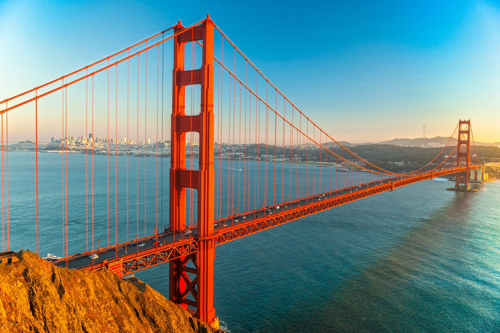
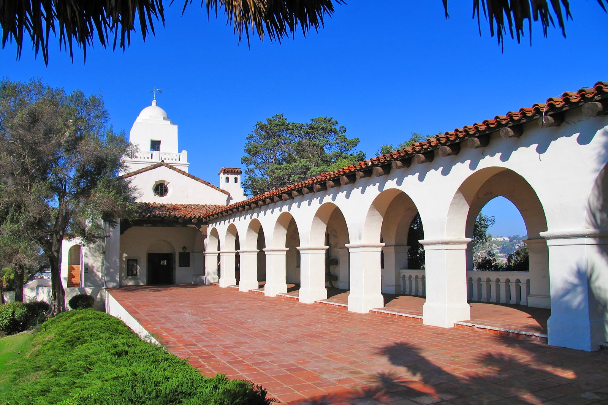
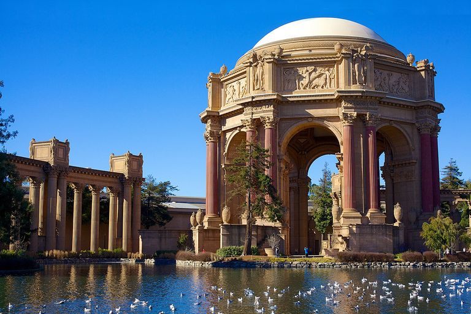

Lieux à visiter
Le pont du Golden Gate :
Symbole emblématique de San Francisco : Le Golden Gate Bridge est l’un des monuments les plus célèbres au monde et le symbole incontournable de la ville de San Francisco. Sa silhouette majestueuse s’étend sur 2,7 kilomètres et sa hauteur atteint 227 mètres. Vue panoramique spectaculaire : Traverser le pont en voiture, à pied ou à vélo offre des vues imprenables sur la baie de San Francisco, le détroit du Golden Gate et l’océan Pacifique. La couleur orange distinctive du pont le rend facilement reconnaissable. Promenade sur le pont : Marcher sur le Golden Gate est une expérience unique. Vous pourrez admirer la ville depuis une perspective différente et profiter de l’air frais marin. De plus, la marche est bénéfique pour la santé cardiaque et réduit le stress1. Photographie inoubliable : Le pont est l’un des sujets les plus photographiés au monde. Que ce soit depuis la rive sud, Alcatraz, le Walt Disney Family Museum, Crissy Field ou Fort Point, chaque point de vue offre des opportunités de capturer sa beauté iconique2345. En somme, le Golden Gate Bridge est bien plus qu’un simple pont. C’est un chef-d’œuvre d’ingénierie, un symbole de progrès et un lieu magique à découvrir lors de votre visite à San Francisco ! 🌉🌟🌉


Le parc national de Presidio :
Histoire riche et diversité d’activités : Le Parc national de Presidio, situé à l’extrémité nord de la ville de San Francisco, est un vaste parc de 603 hectares qui fait partie de la Golden Gate National Recreation Area. Il offre une variété d’expériences pour tous les goûts : des familles aux amateurs d’aventure, en passant par les passionnés d’histoire et ceux qui aiment se détendre au bord de l’une des plus belles baies au monde. Plages pittoresques : Le parc abrite plusieurs plages, dont Baker Beach (avec son côté sauvage et ses vues imprenables) et Crissy Field (une anse sablonneuse prisée des familles, des amateurs de kitesurf et de planche à voile). Golf et hôtels historiques : Les amateurs de golf peuvent découvrir le plus ancien parcours de golf de la côte ouest, le Presidio Golf Course. Pour un séjour mémorable, deux hôtels historiques sont disponibles sur place : l’Inn at the Presidio et le Lodge at the Presidio. Sentiers de randonnée et de VTT : Le parc est sillonné de sentiers à travers une végétation boisée. Un projet de restauration a récemment ouvert de nouveaux terrains, dont le marécage de Quartermaster Reach Marsh, idéal pour les ornithologues. Architecture militaire et lieux ouverts au public : Le Presidio abritait autrefois une base active de l’armée américaine. Aujourd’hui, les bâtiments militaires ont été convertis en lieux ouverts au public, comme des restaurants populaires (Sessions at the Presidio et Presidio Social Club), le Walt Disney Family Museum et le Letterman Digital Arts Center. En somme, le Parc national de Presidio est un lieu où l’histoire, la nature et la détente se rejoignent pour offrir une expérience unique à San Francisco ! 🌳🌊🏞️
 